Fuels and Combustion Calculations
5
Learning Outcome
When you complete this learning material, you will be able to:
Perform combustion and furnace draft calculations and explain flue gas analysis.
Learning Objectives
You will specifically be able to complete the following tasks:
- 1. Describe the nature of combustion and the different types of fuels.
- 2. Calculate the mass and volumetric analysis of a fuel.
- 3. Describe the proximate and ultimate analysis and calculate the heating value of fuel.
- 4. Given the results of a bomb calorimeter test, calculate the heating value of a fuel.
- 5. Calculate the amount of air and excess air required for combustion of fuel.
- 6. Explain flue gas analysis parameters and their significance.
- 7. Calculate theoretical draft, flue gas velocity, and stack diameter.
- 8. Calculate draft fan power and efficiency.
Objective 1
Describe the nature of combustion and the different types of fuels.
COMBUSTION CHEMISTRY
Combustion of a fuel is the chemical combination (usually at high temperatures) of all the combustible elements in the fuel with oxygen. The combustion process is exothermic which means heat is given off as a by-product of the chemical reactions. Extracting this heat energy as effectively and efficiently as possible is the objective of a Power Engineer. It is important to understand the basic theories associated with combustion so the maximum amount of heat energy possible can be recovered from the combustion process in a safe and economically efficient manner.
All fuels, whether in a solid, liquid or gaseous state consist of combustible and non-combustible components. The combustible components consist of the elements hydrogen, carbon and sulphur while the non-combustible components include moisture, ash, carbon dioxide, and other trace elements.
To generate the maximum release of heat energy from the combustion process, all the combustible elements or constituents in the fuel must fully combine with oxygen. If incomplete combustion occurs, then the combustion process will become inefficient and a percentage of the available heat will be lost. An example of incomplete combustion is when carbon (C) combines with insufficient oxygen and produces carbon monoxide (CO). The following formulas are basic examples of complete and incomplete combustion.
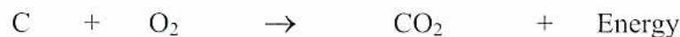
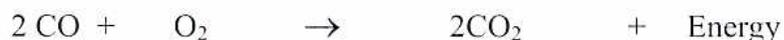
Carbon reacts with oxygen to produce either carbon dioxide ( \( \text{CO}_2 \) ) in equation (1) or carbon monoxide (CO) in equation (2) plus energy. The reaction in equation (2) is called incomplete combustion because the CO reacts again with the oxygen to produce \( \text{CO}_2 \) plus more energy as seen in equation (3).
Each element has its own atomic mass. The values of these masses were arbitrarily chosen and indicate the relative masses of each element based on the carbon-12 isotope. Hydrogen, as the lightest known element, was given an atomic mass of 1.008. Carbon (including all isotopes) has an atomic mass of 12.011, oxygen 15.999, and sulphur 32.06. For the purposes of this module, the nearest whole number equivalent will be used for the atomic masses of the elements. Thus the atomic mass of hydrogen is 1, oxygen is 16 and sulphur is 32.
The molecular mass of any substance is the sum of the masses of the atoms that make up a molecule of the substance. For example, the hydrogen \( H_2 \) molecule is made up of two atoms each having an atomic mass of 1. Therefore the molecular mass of the hydrogen is \( 1 + 1 = 2 \) . The carbon (C) molecule, made up of 1 atom having a mass of 12, has a molecular mass of 12. An oxygen ( \( O_2 \) ) molecule is made up of 2 atoms, each having an atomic mass of 16, so the molecular mass of oxygen is 32. Molecular masses of various combustion-related elements and compounds are listed in Table 1.
Molecular masses, like atomic masses, are relative values and may be expressed in a number of different units depending on the type of calculations being done and the final answer that is desired. However, with chemical reactions, it is frequently necessary to calculate the amount of a substance required to combine with a given amount of another substance. The amounts involved are expressed in actual mass units such as grams or kilograms. However, the equations representing these reactions are expressed by molecular symbols and molecular masses. Therefore, it is necessary to link the molecular masses to definite mass units. For this purpose, the term mole (mol) is used. A mole of a substance is the amount of the substance having a mass equal to the substance's molecular mass expressed in grams. For combustion calculations where large masses are required, it is more convenient to express the mass in kilograms and the unit as kmol.
Elements and Compounds Related to Combustion
Table 1
| Substance | Molecular Formula | Atomic Mass | Molecular Mass (grams) | Form at 15°C |
|---|---|---|---|---|
| Hydrogen | H 2 | 1 | \( 1 \times 2 = 2 \) | Gas |
| Oxygen | O 2 | 16 | \( 16 \times 2 = 32 \) | Gas |
| Carbon | C | 12 | \( 12 \times 1 = 12 \) | Solid |
| Sulphur | S | 32 | \( 32 \times 1 = 32 \) | Solid |
| Nitrogen | N 2 | 14 | \( 14 \times 2 = 28 \) | Gas |
| Carbon Monoxide | CO | -- | \( 12 + 16 = 28 \) | Gas |
| Carbon Dioxide | CO 2 | -- | \( 12 + 16 \times 2 = 44 \) | Gas |
| Methane | CH 4 | -- | \( 12 + 1 \times 4 = 16 \) | Gas |
| Ethane | C 2 H 6 | -- | \( 12 \times 2 + 1 \times 6 = 30 \) | Gas |
| Propane | C 3 H 8 | -- | \( 12 \times 3 + 1 \times 8 = 44 \) | Gas |
| Butane | C 4 H 10 | -- | \( 12 \times 4 + 1 \times 10 = 58 \) | Gas |
| Octane | C 8 H 18 | -- | \( 12 \times 8 + 1 \times 18 = 114 \) | Liquid |
| Benzene | C 6 H 6 | -- | \( 12 \times 6 + 1 \times 6 = 78 \) | Liquid |
| Acetylene | C 2 H 2 | -- | \( 12 \times 2 + 1 \times 2 = 26 \) | Gas |
| Sulphur Dioxide | SO 2 | -- | \( 32 + 16 \times 2 = 64 \) | Gas |
| Hydrogen Sulphide | H 2 S | -- | \( 1 \times 2 + 32 = 34 \) | Gas |
| Water Vapour | H 2 O | -- | \( 1 \times 2 + 16 = 18 \) | Vapour |
| Air | Mixture of Oxygen, Nitrogen and trace Elements | 29 | Gas | |
As seen in Table 1, oxygen has a molecular mass of 32 g; therefore, 1 kmol of oxygen has a mass of 32 kg. Similarly, 2 kg of hydrogen is the mass of 1 kmol of hydrogen because the molecular mass of hydrogen is 2.
It is important for Power Engineers to understand the various relationships between molecular mass, weight and volume and be able to calculate the theoretical amounts of flue gases generated from various types and amounts of fuels burned. A basic principle called “Avogadro’s Hypothesis” states that the volume of one mol of any gas under a given pressure and temperature will be the same as the volume of 1 mol of any other gas at the same conditions.
The standard conditions of temperature and pressure are usually given as 101 kPa and 0°C which results in a volume of 22.4 for one Kmol of the gas. The actual pressure is 101.325 kPa, but for calculation purposes, taking the pressure as 101 kPa provides a sufficiently accurate result.
If “V” = the volume of a gas and “n” the amount of the substance, then \( V/n \) is the same for all gases at the constant values of temperature and pressure. The quantity \( pV/nT \) is also a constant for all gases. This is called the molar gas constant and is given the symbol “R”. From this formula, the equation \( pV = mRT \) is derived and will be used for a number of gas and energy calculations.
To illustrate, one Kmol of oxygen (32 kg) occupies 22.4 m 3 at 101 kPa and 0°C. One Kmol of hydrogen (2 kg) also occupies 22.4 m 3 at 101 kPa and 0°C. Similarly, one Kmol of nitrogen (28 kg) occupies 22.4 m 3 at 101 kPa and 0°C. Using the above property, (Avogadro's Hypothesis), mixtures of gases have volume proportions in the same amount as their mol ratios.
Air supplies the oxygen required for combustion. The proportions by volume of the major components of air at 101 kPa are as follows:
| Nitrogen (N 2 ) | 78.09% |
| Oxygen (O 2 ) | 20.90% |
| Argon (Ar) | 0.93% |
| Carbon Dioxide (CO 2 ) | 0.03% |
| Other Trace Gases | 0.01% |
| Total | 100.00% |
The equivalent mass ratios take into account the masses of each major component as shown below.
|
Volume %
(V%) |
Molecular Mass
(MM) |
Mass
(V% * MM) |
Mass % | |
|---|---|---|---|---|
| Nitrogen (N 2 ) | 78.10% | 28 | 21.90 | 76.09% |
| Oxygen (O 2 ) | 20.90% | 32 | 6.69 | 23.24% |
| Argon (Ar) | 0.95% | 18 | 0.17 | 0.60% |
| Carbon Dioxide (CO 2 ) | 0.04% | 44 | 0.02 | 0.07% |
| Other Trace Gases | 0.01% | not included | ||
| Total | 100.00% | 28.78 | 100.00% |
Because the oxygen is only used in combustion, the Ar, CO 2 and trace gases are combined with the nitrogen to create a final mass ratio of 23.2% O 2 and 76.8% N 2 . Therefore, to supply 1 kg of oxygen requires \( 1/0.232 = 4.31 \) kg of Air. The remaining 3.31 kg of the air is composed of nitrogen and some trace gases.
LAWS OF COMBUSTION
Combustion calculations depend upon four fundamental laws:
- 1. Conservation of Matter - Matter cannot be destroyed or created but can be converted to other forms of matter.
- 2. Conservation of Energy - Energy cannot be destroyed or created but can be converted to other forms of energy.
- 3. General Gas Law - The volume of a gas is directly proportional to its absolute temperature and inversely proportional to its absolute pressure.
- 4. Law of Combining Masses - All substances combine only in accordance with a definite, simple relationship as to relative masses based on their chemical composition.
COMBUSTION REACTIONS
Combustion is a chemical reaction where certain elements are combined with oxygen (oxidized) to form different elements or compounds.
The equations representing the reactions are formed in accordance with the following fixed rules:
THE TOTAL MASS OF ALL SUBSTANCES BEFORE COMBUSTION MUST BE EQUAL TO THE TOTAL MASS AFTER COMBUSTION.
and
THE NUMBER OF ATOMS OF EACH ELEMENT MUST BE THE SAME ON BOTH SIDES OF THE EQUATION.
Table 2 shows how the combustibles in a fuel react with the oxygen in the air to produce CO 2 and H 2 O or, in the case of incomplete combustion, CO.
Combustion Reactions
Table 2
| Substance | Symbol | Reaction |
|---|---|---|
| Carbon (to CO) | C | \( 2\text{C} + \text{O}_2 \longrightarrow 2\text{CO} \) |
| Carbon (to CO 2 ) | C | \( \text{C} + \text{O}_2 \longrightarrow \text{CO}_2 \) |
| Carbon Monoxide | CO | \( 2\text{CO} + \text{O}_2 \longrightarrow 2\text{CO}_2 \) |
| Hydrogen | H 2 | \( 2\text{H}_2 + \text{O}_2 \longrightarrow 2\text{H}_2\text{O} \) |
| Sulphur (to SO 2 ) | S | \( \text{S} + \text{O}_2 \longrightarrow \text{SO}_2 \) |
| Sulphur (to SO 3 ) | S | \( 2\text{S} + 3\text{O}_2 \longrightarrow 2\text{SO}_3 \) |
| Methane | CH 4 | \( \text{CH}_4 + 2\text{O}_2 \longrightarrow \text{CO}_2 + 2\text{H}_2\text{O} \) |
| Ethane | C 2 H 6 | \( 2\text{C}_2\text{H}_6 + 7\text{O}_2 \longrightarrow 4\text{CO}_2 + 6\text{H}_2\text{O} \) |
| Propane | C 3 H 8 | \( \text{C}_3\text{H}_8 + 5\text{O}_2 \longrightarrow 3\text{CO}_2 + 4\text{H}_2\text{O} \) |
| Butane | C 4 H 10 | \( \text{C}_4\text{H}_{10} + 6\frac{1}{2}\text{O}_2 \longrightarrow 4\text{CO}_2 + 5\text{H}_2\text{O} \) |
| Octane | C 8 H 18 | \( \text{C}_8\text{H}_{18} + 12\frac{1}{2}\text{O}_2 \longrightarrow 8\text{CO}_2 + 9\text{H}_2\text{O} \) |
| Benzene | C 6 H 6 | \( \text{C}_6\text{H}_6 + 7\frac{1}{2}\text{O}_2 \longrightarrow 6\text{CO}_2 + 3\text{H}_2\text{O} \) |
| Acetylene | C 2 H 2 | \( \text{C}_2\text{H}_2 + 2\frac{1}{2}\text{O}_2 \longrightarrow 2\text{CO}_2 + \text{H}_2\text{O} \) |
| Hydrogen Sulphide | H 2 S | \( 2\text{H}_2\text{S} + 3\text{O}_2 \longrightarrow 2\text{H}_2\text{O} + 2\text{SO}_2 \) |
The three basic combustibles are carbon, hydrogen and sulphur. They are combined with oxygen in various ways in all fuels, depending on the type of fuel.
Combustion of Carbon
An atom of carbon may combine with:
- (1) two atoms of oxygen to form carbon dioxide ( \( \text{CO}_2 \) ) , or
- (2) with one atom of oxygen to form carbon monoxide ( \( \text{CO} \) ).
Expressing these as formulas:
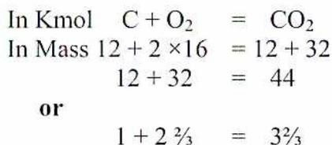
Therefore, when 1 kg of carbon is completely burned with \( 2 \frac{2}{3} \) kg of oxygen it produces \( 3\frac{2}{3} \) kg of \( \text{CO}_2 \) . This reaction also releases 33 890 kJ of heat. Any mass of \( \text{CO}_2 \) must be composed of \( \frac{12}{44} \times 100 = 27.27\% \) by mass of carbon and 72.73% by mass of oxygen, or
$$ 1 \text{ kg CO}_2 = 0.2727 \text{ kg C} + 0.7273 \text{ kg O}_2 $$
that is, a mass ratio of carbon to \( \text{O}_2 \) of 1 : 2.67.
If 1 kg of \( \text{O}_2 \) is contained in 4.31 kg air, it is necessary to supply, for complete combustion, 1 kg of carbon:
$$ 2.67 \times 4.31 = 11.51 \text{ kg of air.} $$
This amount contains \( \text{N}_2 \)
$$ 2.67 \times 3.31 = 8.84 \text{ kg N}_2 $$
Thus, in the complete combustion of 1 kg of carbon, the resulting products of combustion are:
$$ \begin{array}{rcl} 1 \text{ kg C} + 2.67 \text{ kg O}_2 & = & 3.67 \text{ kg CO}_2 \\ \text{and } 2.67 \times 3.31 \text{ kg N}_2 & = & \underline{8.84 \text{ kg N}_2} \\ \text{Total mass of flue gas} & = & 12.51 \text{ kg} \end{array} $$
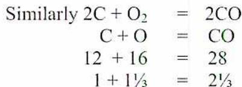
When 1 kg of carbon burns incompletely with only \( 1\frac{1}{3} \) kg (too little) of \( \text{O}_2 \) , it produces \( 2\frac{2}{3} \) kg of \( \text{CO} \) and liberates 10 305 kJ of heat.
If the CO formed goes up the stack, it carries away with it \( 33\,890 - 10\,305 = 23\,585 \) kJ of heat which is all wasted.
Any mass of CO must be composed of \( \frac{12}{28} \times 100 = 42.86\% \) by mass of carbon and \( 57.14\% \) by mass of oxygen, or
$$ 1 \text{ kg CO} = 0.4286 \text{ kg C} + 0.5714 \text{ kg O}_2 $$
that is, a ratio of carbon to \( \text{O}_2 \) of 1 : 1.333
Air required to burn 1 kg of C to CO
$$ 1.333 \times 4.31 = 5.745 \text{ kg of air} $$
Thus in the incomplete combustion of 1 kg of carbon to CO, the resulting products of combustion will be:
$$ \begin{array}{rcl} 1 \text{ kg C} + 1.333 \text{ kg O}_2 & = & 2.333 \text{ kg CO} \\ \text{and } 1.333 \times 3.31 \text{ kg N}_2 & = & \underline{4.412 \text{ kg N}_2} \\ \text{Total mass of flue gas} & = & 6.745 \text{ kg} \end{array} $$
COMBUSTION OF HYDROGEN
Two molecules of hydrogen (four atoms) combine with one molecule of oxygen (two atoms) to form two molecules of water.
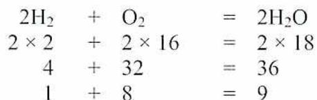
When 1 kg of \( \text{H}_2 \) is burned with 8 kg of \( \text{O}_2 \) , it produces 9 kg of \( \text{H}_2\text{O} \) and liberates 143 900 kJ of heat.
Any mass of \( \text{H}_2\text{O} \) must be composed of \( \frac{4}{36} \times 100 = 11.1\% \) by mass of \( \text{H}_2 \) and \( 88.9\% \) by mass of \( \text{O}_2 \)
$$ \text{or } 1 \text{ kg H}_2\text{O} = 0.111 \text{ kg H}_2 + 0.889 \text{ kg O}_2 $$
that is a ratio of \( \text{H}_2 \) to \( \text{O}_2 \) of 1 : 8.
The air required to burn 1 kg of \( \text{H}_2 \) to \( \text{H}_2\text{O} \) is
$$ 8 \times 4.31 = 34.48 \text{ kg of air} $$
Thus in the combustion of 1 kg of H 2 to H 2 O, the resulting products of combustion are:
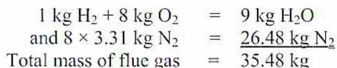
| 1 kg H 2 + 8 kg O 2 | = | 9 kg H 2 O |
| and 8 × 3.31 kg N 2 | = | 26.48 kg N 2 |
| Total mass of flue gas | = | 35.48 kg |
COMBUSTION OF SULPHUR
One molecule of sulphur will combine with one molecule of oxygen (containing two atoms) to form one molecule of sulphur dioxide.
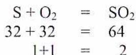
| S + O 2 | = | SO 2 |
| 32 + 32 | = | 64 |
| 1+1 | = | 2 |
When 1 kg of S is burned with 1 kg of O 2 , it produces 2 kg of SO 2 and liberates 9290 kJ of heat.
Any mass of SO 2 must be composed of \( \frac{32}{64} \times 100 = 50\% \) by mass of S and 50% by mass of O 2 , or
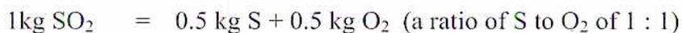
The air required to burn 1 kg of S to SO 2 is
$$ 1 \times 4.31 = 4.31 \text{ kg of air.} $$
Thus in the complete combustion of 1 kg of S to SO 2 , the resulting products of combustion are:
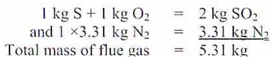
| 1 kg S + 1 kg O 2 | = | 2 kg SO 2 |
| and 1 × 3.31 kg N 2 | = | 3.31 kg N 2 |
| Total mass of flue gas | = | 5.31 kg |
Objective 2
Calculate the mass and volumetric analysis of a fuel.
MASS ANALYSIS OF FUELS
Applying the Law of Combining Masses, the proportions required for the combustion of any hydrocarbon can be calculated because the ratio of C to H 2 is known and each mass can be calculated separately as a fraction of the whole (assumed as 1 kg).
Table 3 summarizes the mass analysis data for the main reactive or combustible constituents for a number of fuels.
Mass Analysis Data Tabulated in kg/kg of Fuel
Table 3
| Combustible Component of Fuel | Molecular Formula | Theoretically required kg/kg of Combustible Component | Products of Combustion kg | |||||
|---|---|---|---|---|---|---|---|---|
| O 2 | Air | CO 2 | H 2 O | N 2 | CO | SO 2 | ||
| Carbon (to CO 2 ) | C | 2.67 | 11.49 | 3.67 | -- | 8.82 | -- | -- |
| Carbon (to CO) | C | 1.33 | 5.75 | -- | -- | 4.42 | 2.33 | -- |
| Carbon Monoxide | CO | 0.57 | 2.46 | 1.57 | -- | 1.89 | -- | -- |
| Hydrogen | H 2 | 8.00 | 34.48 | -- | 9.00 | 26.48 | -- | -- |
| Sulphur | S | 1.00 | 4.31 | -- | -- | 3.31 | -- | 2.00 |
| Methane | CH 4 | 4.00 | 17.24 | 2.75 | 2.25 | 13.24 | -- | -- |
| Ethane | C 2 H 6 | 3.73 | 16.09 | 2.93 | 1.80 | 12.36 | -- | -- |
VOLUME ANALYSIS OF FUELS
Sometimes it is necessary to convert between the mass and volume of a fuel. This happens when the fuel is gaseous. Some examples are shown in Table 4.
Mass Analysis Data Tabulated in m
3
/m
3
of Fuel
Table 4
| Gaseous Combustible Component | Molecular Formula | Theoretically Required m 3 /m 3 of Combustible Component | Products of Combustion m 3 | |||||
|---|---|---|---|---|---|---|---|---|
| O 2 | Air | CO 2 | H 2 O | N 2 | CO | SO 2 | ||
| Carbon Monoxide | CO | 0.5 | 2.38 | 1 | -- | 1.88 | -- | -- |
| Hydrogen | H 2 | 0.5 | 2.38 | -- | 1 | 1.88 | -- | -- |
| Methane | CH 4 | 2.0 | 9.52 | 1 | 2 | 7.52 | -- | -- |
| Ethane | C 2 H 6 | 3.5 | 16.67 | 2 | 3 | 13.17 | -- | -- |
The derivation of Table 4 requires the application of “Avogadro’s Hypothesis” which states:
EQUAL VOLUMES OF DIFFERENT GASES AT THE SAME
TEMPERATURE AND PRESSURE WILL CONTAIN EQUAL NUMBERS OF
MOLECULES.
A standard volume can be chosen which just contains the molecular mass of each gas. For example, hydrogen has a molecular mass 2.016 at standard temperature and pressure (101.3 kPa and 0°C). Thus, 2.016 kg of H 2 occupies \( V \) m 3 .
where
$$ V = \frac{wRT}{P} \text{ m}^3 $$
and
\(
m = 2.016 \text{ kg}
\)
\(
R = 4124 \text{ J/kg K}
\)
(The Characteristic Constant for Hydrogen)
\(
T = 0 + 273 \text{ K}
\)
\(
P = 101.3 \times 1000 \text{ Pa}
\)
All gases of a similar molecular mass, when under the same conditions of temperature and pressure, will occupy the same volume of 22.4 m 3 .
In the case of hydrogen, Table 3 states that 1 kg of H 2 requires 8 kg of O 2 for complete combustion.
Since 1 kg of any gas occupies:
$$ M \times \frac{22.4}{\text{mol wt}} \text{ m}^3 \text{ where } M = \text{mass of gas in kg} $$
$$ 1 \text{ kg of H}_2 \text{ will occupy } \frac{1 \times 22.4}{2} = 11.2 \text{ m}^3 $$
$$ 8 \text{ kg of O}_2 \text{ will occupy } \frac{8 \times 22.4}{32} = 5.6 \text{ m}^3 $$
$$ \text{Checking with Table 4, } 1 \text{ m}^3 \text{ of H}_2 \text{ requires } \frac{5.6}{11.2} = 0.5 \text{ m}^3 \text{ of O}_2 $$
To find the volume of a gas at a different temperature or pressure, application of the General Gas Law gives the desired results.
Objective 3
Describe proximate and ultimate analysis and calculate the heating value of fuel.
FUEL ANALYSES
To determine the properties of a fuel, such as its burning characteristics, constituents, heating value, and the amount of air required for combustion, it is necessary to analyse the fuel. Two methods of analysis are used to determine the composition of fuel:
- • Proximate analysis - determines the composition of the fuel by mechanical means
- • Ultimate analysis - separates the fuel into its chemical constituents by chemical processes
Proximate Analysis
Proximate analysis on a solid fuel such as coal or hog fuel determines the percentage of moisture, volatile material, fixed carbon and ash in the fuel. This indicates the behaviour of the fuel in the furnace and the best method to be used for firing. Three samples are taken and weighed, one for each part of the analysis.
The first sample is dried for one hour in an oven, at 105°C, and then weighed again. The percentage of moisture will be the loss of mass divided by the original mass of the sample, times 100.
The second sample is heated for seven minutes in a covered oxygen free container, to 954°C. The loss of mass represents both moisture and volatile material. The percentage of volatile material is obtained by subtracting the percentage of moisture that was determined from the analysis of the first sample.
The third sample is then heated for two hours, at 760°C, to achieve complete combustion. The remaining residue is the ash content.
The percentage of fixed carbon is the difference between 100 and the sum of the ash, volatiles and moisture percentages. Percentages can vary significantly with different fuels.
Table 5 shows examples of the proximate analysis of a coal and a hog fuel (wood product waste) sample:
Proximate Analysis
Table 5
| CONSTITUENT | COAL | HOG FUEL |
|---|---|---|
| Fixed carbon | 57.43% | 52.56% |
| Volatile material | 34.67% | 11.02% |
| Moisture | 2.71% | 35.91% |
| Ash | 5.19% | 0.51% |
Ultimate Analysis
While the proximate analysis is sufficient to determine the burning qualities of a fuel, a more detailed analysis is required to carry out combustion calculations. This more detailed analysis, called the ultimate analysis , breaks down the fuel chemically into all its elements such as carbon, nitrogen, oxygen, hydrogen and sulphur. A qualified chemist does this analysis in a chemical laboratory. A chemical analysis of the elements in a coal includes the following:
- • Carbon
- • Hydrogen
- • Sulphur
- • Oxygen
- • Nitrogen
- • Ash
Table 6 gives the ultimate analysis of the same type of coal used for the proximate analysis. The values are in percentages by mass.
Ultimate Analysis
Table 6
| CONSTITUENT | PERCENTAGE |
|---|---|
| Carbon | 79.71 |
| Hydrogen | 5.29 |
| Sulphur | 1.26 |
| Oxygen | 7.13 |
| Nitrogen | 1.42 |
| Ash | 5.19 |
Note that the ash content is the same for both types of analysis. The amount of carbon in the ultimate analysis is greater than that in the proximate analysis because it includes both the fixed carbon and the carbon contained in the volatile material.
The analyses may be expressed in various ways:
- • As received or as fired
- • Dry or moisture free
- • Moisture and ash free
As Received or As Fired
The “as received or as fired” method lists the constituents of the fuel as it is received at the plant or as it is fed to the boiler furnace. In this case, the moisture content is included as part of the hydrogen and oxygen. This is the method used for ultimate analysis.
Dry or Moisture Free
In the “dry or moisture free” method, the mass of the moisture is deducted and the constituents are listed as percentages of the remaining mass of fuel.
Moisture or Ash Free
In the “moisture or ash free” method, the mass of the moisture plus the mass of the ash is deducted and the constituents are listed as percentages of the remaining mass of fuel.
HIGHER AND LOWER HEATING VALUES
When the hydrogen in the fuel combines with oxygen in the combustion process, it produces \( \text{H}_2\text{O} \) . Since that water cannot stay in the liquid form in the high temperature zones of the furnace or flue gas passages, it turns to steam. It passes out of the furnace with the waste gases carrying with it the enthalpy of evaporation. This heat energy is lost in the waste gases and therefore not available to the boiler or heat engine.
The higher heating value (HHV) is the total amount of heat produced including the latent heat of vaporization of any water vapour formed.
The lower heating value (LHV) is the total amount of heat produced minus the latent heat of vaporization of any water vapour formed. This latent heat of vaporization is in the amount of 2257 kJ/kg water.
Converting Between HHV and LHV
The relationship between the lower heating value and the higher heating value can be written as an equation as follows:
$$ \text{LHV} = \text{HHV} - 2257(m + 9 h) $$
where \( m \) = mass of moisture in fuel/kg
\( h \) = mass of hydrogen in fuel/kg
When the fuel is hydrogen this gives:
$$ \begin{aligned}\text{LHV} &= 144\,200 - 2257(0 + 9 \times 1) \\ &= 144\,200 - 20\,313 \\ &= \mathbf{123\,887\ kJ/kg\ (Ans.)}\end{aligned} $$
When firing coal, oil, hog fuel, municipal wastes or any fuel that contains water, allowance is made for the inherent moisture in the fuel as well as the moisture produced in the burning of hydrogen. This is why the “mass of moisture in fuel/kg” is added to the equation when determining heating values.
Power engineers in North America follow the recommendations of the ASME and use the HHV. European practice is to use the LHV.
Usually a statement of heating value determined experimentally using a calorimeter, accompanies the lab's report on the fuel analysis.
Heating Value from an Ultimate Analysis
A calculation of the heating value of the fuel can be made from the Ultimate Analysis using the known heating values of each of the combustible materials, as shown in Table 7.
Any given fuel liberates heat in proportion to the mass of each of these elements it contains. The heating value can be calculated if the ultimate analysis is known.
The higher heat value of a coal can also be found using Dulong's Formula as follows:
$$ \text{Heating Value kJ/kg} = 33\,700\ C + 144\,000 \left( H_2 - \frac{O_2}{8} \right) + 9\,300\ S $$
C = Mass of carbon/kg of fuel
\(
H_2
\)
= Mass of hydrogen/kg of fuel
\(
O_2
\)
= Mass of oxygen/kg of fuel
S = Mass of sulphur/kg of fuel
Table of Heating Values
Table 7
| Combustible | Symbol | Heating Values |
kJ/m
3
(at 101 kPa and 0°C) |
|
|---|---|---|---|---|
| MJ/kg | ||||
| Higher | Lower | |||
| Hydrogen | H 2 | 144.2 | 122.1 | 12 817 |
| Carbon (to CO) | C | 10.1 | --- | -- |
| Carbon (to CO 2 ) | C | 33.7 | --- | -- |
| Carbon Monoxide | CO | 10.2 | --- | 12 780 |
| Sulphur (to SO 2 ) | S | 9.3 | --- | -- |
| Sulphur (to SO 3 ) | S | 13.4 | --- | -- |
| Methane | CH 4 | 55.5 | 50 | 39 793 |
| Ethane | C 2 H 6 | 51.7 | 47.3 | 71 780 |
| Propane | C 3 H 8 | 50.3 | 46.4 | -- |
| Butane | C 4 H 10 | 49.5 | 45.7 | 132 642 |
| Octane | C 8 H 18 | 47.9 | 44.4 | -- |
| Benzene | C 6 H 6 | 41.8 | 40.1 | -- |
| Acetylene | C 2 H 2 | 49.9 | 48.2 | 58 683 |
| Hydrogen Sulphide | H 2 S | 16.5 | 15.2 | 24 107 |
Part of the hydrogen will combine with the oxygen in the coal and form water. Therefore, the hydrogen associated with this combination will not be available for the combustion process. The hydrogen that is available for producing heat is the total hydrogen, minus that which readily combines with the oxygen to form water. This has been proven
through testing to equal one-eighth of the oxygen present or \( \frac{O_2}{8} \) . The available or free
hydrogen is then \( \left( H_2 - \frac{O_2}{8} \right) \) .
Example 1:
The ultimate analysis of a sample of coal shows the following percentages by mass: carbon 84.50, hydrogen 4.20, oxygen 3.04, nitrogen 1.28, sulphur 0.91, and ash 6.07. Find the higher heating value per kg of coal using Dulong's Formula.
Solution:
$$ \begin{aligned}\text{Heating Value kJ/kg} &= 33\,700\,C + 144\,000\left(H_2 - \frac{O_2}{8}\right) + 9\,300\,S \\ &= 33\,700 \times 0.845 + 144\,000\left(0.042 - \frac{0.0304}{8}\right) + 9\,300 \times 0.0091 \\ &= 28\,476.5 + 5\,500.8 + 84.63 \\ &= \mathbf{34\,061.93\,kJ/kg\ (Ans.)}\end{aligned} $$
Dulong's formula can be applied as shown above to give an approximate heating value of coal. The same formula can be used for an oil fuel but gives less accurate results. Gaseous fuel heating values are best calculated from the individual constituents on a volumetric basis.
Objective 4
Given the results of a bomb calorimeter test, calculate the heating value of a fuel.
CALCULATION OF FUEL HEATING VALUE
One of the best methods for accurately determining the heating value of a fuel is to use a device called a bomb calorimeter. A calorimeter takes a carefully measured amount of a fuel and combusts it under controlled conditions to measure the amount of heat energy produced during complete combustion.
As the fuel burns, it releases heat energy which is absorbed by the known mass of water in the bucket and by the metal parts that make up the calorimeter. To make calculating the heating value of the fuel easy, the metal parts of the calorimeter are first converted into a “known water equivalent value”. Therefore, the total heat energy given off by the fuel is calculated using the following equation:
Heat energy given up by the fuel = (Mass of water + water equivalent of the metal parts) × (change in temperature of the water) × specific heat of the water or 4.2 kJ/kg K)
BOMB CALORIMETER
A measured amount of fuel is placed inside the bomb or crucible of the oxygen bomb calorimeter shown in Fig.1. A fuse wire is connected to the igniter terminals and suspended immediately above the fuel sample. The bomb is closed and filled with oxygen to a pressure of about 2 070 kPa and placed in the water bucket. A motor driven stirrer continuously circulates the water in the bucket. Passing an electric current through the fuse wire ignites the fuel.
The heat that the combustion of the fuel liberates is calculated from the temperature rise of the water and the known mass of the water plus the water equivalent of the metal parts. The water equivalent is simply the mass of the metal multiplied by the specific heat of the material.
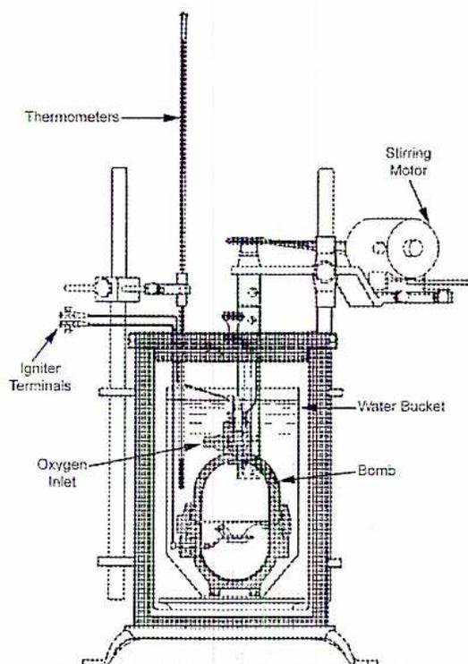
Figure 1
Oxygen Bomb Calorimeter
Example 2:
A 0.78 gram sample of coal was burned in a bomb calorimeter with a water equivalent of 460 grams. The bomb is immersed in a water bucket containing 2 400 grams of water. The temperature of the water increased a total of 2.21°C. Calculate the heating value of this coal in kJ/kg.
Solution:
$$ \begin{aligned} \text{Heat given out by coal} &= \text{Heat absorbed by water and metal} \\ \text{Mass of coal} \times \text{Heating Value of coal} &= \text{Specific Heat of Water (4.183 kJ/kg } ^\circ\text{C)} \times \text{Mass} \\ &\quad (\text{Water} + \text{Water Equivalent}) \times \text{Temp. Change} \end{aligned} $$
$$ \begin{aligned} 0.78\text{g} \times \text{Heating Value} &= 4.183 \text{ J/g } ^\circ\text{C} (2400 \text{ g} + 460 \text{ g}) \times 2.21^\circ\text{C} \\ \text{Heating value} &= \frac{11\,963.38 \times 2.21}{0.78} \text{ J/g or kJ/kg} \\ &= 33\,896.24 \text{ kJ/kg (Ans.)} \end{aligned} $$
These results represent the higher heating value because the water vapour formed during combustion condenses inside the bomb, and gives up its latent heat of vaporization to the surrounding water.
Objective 5
Calculate the amount of air and excess air required for combustion of fuel.
AIR REQUIRED FOR COMBUSTION
The “theoretical air” required for complete combustion is the exact amount of air required to satisfy all the chemical equations associated with the complete combustion of a specific fuel. Using values from Table 3, a simple formula may be derived for the amount of theoretically air required for complete combustion of any fuel. A mixture that contains just enough (theoretical) air to supply sufficient oxygen for complete combustion of the fuel is called a “stoichiometric mixture”. This is expressed in terms of kg of air per kg of fuel as follows:
$$ \text{Theoretical air (kg per kg of fuel)} = \left[ \frac{8}{3} C + 8 \left( H_2 - \frac{O_2}{8} \right) + S \right] \frac{100}{23} $$
The terms C, H 2 , O 2 and S represent the mass % of carbon, hydrogen, oxygen and sulphur in the fuel. The respective coefficients are taken from Table 3.
Example 3
Calculate the air theoretically required for complete combustion of coal of the following analysis (dry):
| Carbon | 69.3% |
| Hydrogen | 4.2% |
| Oxygen | 7.5% |
| Nitrogen | 1.1% |
| Sulphur | 0.6% |
| Ash | 17.3% |
| 100.0% |
Moisture (not included in the analysis) was found to be 2.1%.
Solution
$$ \begin{aligned}\text{Theoretical air (kg per kg of fuel)} &= \left[ \frac{8}{3} C + 8 \left( H_2 - \frac{O_2}{8} \right) + S \right] \frac{100}{23} \\&= \left[ \frac{8}{3} \times 0.693 + 8 \left( 0.042 - \frac{0.075}{8} \right) + 0.006 \right] 4.348 \\&= [1.848 + 8(0.042 - 0.0094) + 0.006] 4.348 \\&= [1.848 + 8(0.0326) + 0.006] 4.348 \\&= [1.848 + 0.2608 + 0.006] 4.348 \\&= [2.1148] 4.348 \\&= \mathbf{9.195} \text{ kg of air /kg of coal}\end{aligned} $$
This formula is accurate enough for most purposes. Calculating each of the component parts of a fuel, gives a more accurate and clear picture of the processes involved in the combustion process. Examples of these calculations are: These results are also shown tabulated in Table 8.
| C - 0.693 | O 2 | = | 2.67 | × | 0.693 | = | 1.850 |
| Air | = | 11.49 | × | 0.693 | = | 7.963 | |
| CO 2 | = | 3.67 | × | 0.693 | = | 2.543 | |
| N 2 | = | 8.82 | × | 0.693 | = | 6.112 | |
| H 2 - 0.042 | O 2 | = | 8 | × | 0.042 | = | 0.336 |
| Air | = | 34.48 | × | 0.042 | = | 1.448 | |
| N 2 | = | 26.48 | × | 0.042 | = | 1.112 | |
| H 2 O | = | 9 | × | 0.042 | = | 0.378 | |
| S - 0.006 | O 2 | = | 1 | × | 0.006 | = | 0.006 |
| Air | = | 4.31 | × | 0.006 | = | 0.026 | |
| N 2 | = | 3.31 | × | 0.006 | = | 0.020 | |
| SO 2 | = | 2 | × | 0.006 | = | 0.012 |
Tabulated Form
Table 8
| Mass/kg of Coal kg | Required-kg | Products of Combustion - kg/kg Coal | ||||||
|---|---|---|---|---|---|---|---|---|
| O 2 | Air | CO 2 | O 2 | N 2 | H 2 O | SO 2 | ||
| C | 0.693 | 1.850 | 7.963 | 2.543 | -- | 6.112 | -- | -- |
| H 2 | 0.042 | 0.336 | 1.448 | -- | -- | 1.112 | 0.378 | -- |
| O 2 | 0.075 | -- | -- | -- | 0.075 | -- | -- | -- |
| N 2 | 0.011 | -- | -- | -- | -- | 0.011 | -- | -- |
| S | 0.006 | 0.006 | 0.026 | -- | -- | 0.020 | -- | 0.012 |
| Ash | 0.173 | -- | -- | -- | -- | -- | -- | -- |
| Totals | 2.192 | 9.437 | 2.543 | 0.075 | 7.255 | 0.378 | 0.012 | |
| O 2 in coal | 0.075 | 0.323 | -- | 0.075 | 0.248 | -- | -- | |
| Totals | 2.117 | 9.114 | 2.543 | 0.000 | 7.017 | 0.378 | 0.012 | |
| SO 2 as CO 2 | -- | -- | 0.012 | -- | -- | -- | 0.012 | |
| Total | 2.115 | 9.114 | 2.555 | 0.000 | 7.017 | 0.378 | 0.000 | |
From the totals it is now necessary to subtract the O 2 originally in the coal as well as the air and the N 2 equivalent of this oxygen.
The SO 2 in the flue gas appears as CO 2 in the analysis (as will be explained in the following material) so therefore is next added to the CO 2 .
The last line gives the final totals. Note that the total air required is now 9.114 kg/kg of fuel compared to 9.195 kg as given by the formula which is a negligible error.
EXCESS AIR CALCULATIONS
If an insufficient amount of air is supplied to the burner, unburned fuel, soot, smoke, and carbon monoxide exhausts from the boiler. This causes:
- • Heat transfer surface fouling
- • Pollution
- • Lower combustion efficiency
- • Flame instability and a potential for explosions.
To avoid inefficient and unsafe conditions, boilers operate at a level of air in excess of that required for theoretical complete combustion. Too much excess air can also have a detrimental effect because it dilutes the hot combustion gases with cooler feed air causing a reduction in the combustion temperature or a higher requirement for preheating.
In the operation of a boiler, theoretical conditions are never attained, it is important that the foregoing calculations be tied in with practical conditions. Depending on the type of fuel, varying amounts of air in excess of the theoretical amount are used to achieve complete combustion. Incomplete combustion of carbon to carbon monoxide can result in appreciable losses of heat because only about 30% of the available heat in the carbon is released forming CO instead of CO 2 .
The mass of air theoretically required for the combustion of one kg of dry coal is (from the above tabulation) 9.195 kg. For each 20% in excess of this amount (that is, each 1.839 kg above 9.195), there appears in the products of combustion:
$$ 1.839 \times 0.232 = 0.427 \text{ kg O}_2 $$
$$ 1.839 \times 0.768 = 1.412 \text{ kg N}_2 $$
Table 9 shows values for varying amounts of excess air:
Mass of Products of Combustion for Varying Amounts of Air
Table 9
| Mass of Products of Combustion kg | Mass of Products for Varying Amounts of Excess Air - kg | |||||
|---|---|---|---|---|---|---|
| 20% | 40% | 60% | 80% | 100% | ||
| CO 2 | 2.548 | 2.548 | 2.548 | 2.548 | 2.548 | 2.548 |
| O 2 | 0.000 | 0.423 | 0.846 | 1.269 | 1.692 | 2.115 |
| N 2 | 7.012 | 8.414 | 9.816 | 11.218 | 12.620 | 14.022 |
| H 2 O | 0.378 | 0.378 | 0.378 | 0.378 | 0.378 | 0.378 |
| Total | 9.938 | 11.763 | 13.588 | 15.413 | 17.238 | 19.063 |
In order to be of practical value it is necessary to calculate for percentage volume of dry products of combustion, since in furnace efficiency tests the content of the flue gases is given in percentage volume. The water content cannot be measured because the analysis is made at room temperature, thus the water will have condensed.
By analyzing flue gas composition, the excess air concentration can be determined. This can be done either directly or by using combustion tables similar to the ones in Table 9. The amount of CO 2 in the flue gas remains constant regardless of the excess air. Conversely, the O 2 and N 2 from the air continue to increase. This causes a decrease in the percentage of observed CO 2 and a rise in O 2 and N 2 percentage.
Objective 6
Explain flue gas analysis parameters and their significance.
FLUE GAS ANALYSIS
One of the key tools that the operator uses to maintain the operation of the boiler or steam generator in the most safe and efficient range possible is by analysing the flue gases exiting the stack. The volume of each constituent in the flue gas, as well as the stack opacity (emissions) and flue gas temperatures indicate how efficiently the combustion process is occurring in the furnace. This information is used to adjust and control the various operating parameters to achieve optimum efficiencies.
Composition of Flue Gas
Flue gas should be analysed for:
- 1. \( \text{CO}_2 \) , the product of complete combustion corresponding to a maximum liberation of heat.
- 2. \( \text{CO} \) , the product of incomplete combustion as an indicator of the quantity of undeveloped heat escaping to the stack.
- 3. \( \text{O}_2 \) , as an indicator of the excess air being used.
The best operation is that which produces a maximum of \( \text{CO}_2 \) with a minimum of \( \text{O}_2 \) and no \( \text{CO} \) .
Collecting a Sample
The sample must be a true average of all the gas flowing and it is never easy to obtain a truly representative sample. The composition of the gas may vary considerably between the outer edge and the centre of the gas passage. This affects both the sampling method and placement of any batch or continuous sampling apparatus or analyzer.
The sample pipe normally extends either half way or completely across the diameter of the boiler ductwork. It is installed in an area of relatively straight ducting reducing the effect of flue gas turbulence. The sample pipe has a number of inlet holes allowing a representative sample to be collected. Due to the potential for ash, slag and soot to build up and block the inlet holes, there is normally a method of purging the sample pipe. Purging mediums include high-pressure air and nitrogen.
The sample collection pipe or nozzle is installed through the ducting or casing of the boiler at the most effective location possible. It is very important that, once installed, the pipe is sealed to prevent air leakage into the ducting or the sample tube itself. Either of these actions will contaminate the sample and give inaccurate readings to the operator. It is important to keep the sample piping clean and making sure there is no in-leakage or contamination of the flue gas sample.
Interpreting the Analysis
The excess air used is calculated, and this figure is compared with the excess air considered appropriate for the method of firing. From this analysis, an opinion can be formed of the efficiency of operation.
Tables are available showing CO 2 analyses but these have little value unless complete details are known regarding:
- (1) Kind of coal or other fuel and its analysis.
- (2) Method of stoking: hand, stoker or pulverized fuel.
- (3) Method of causing draft: natural, forced or induced.
- (4) Furnace volume compared with the grate area.
- (5) Rating at which the boiler is being operated which controls the rate at which fuel is being burned.
A six to eight hour test is run under steady load taking CO 2 analyses every 10 or 15 minutes. At the same time, the air supply is reduced until smoke or CO just appears in the flue gas. This gives the maximum CO 2 percentage and the minimum excess air that can be used economically.
If these tests are run at different loads or ratings, a valuable set of data is obtained giving the best CO 2 % for different loads. The data indicates:
- (1) The relative efficiency of the combustion process.
- (2) The cleanliness of the boiler surfaces (soot and scale).
- (3) The condition of the baffles.
- (4) The tightness of the boiler settings.
Flue gas analyzers give percentage by volume of the flue gases, whereas analysis of fuels and efficiency calculations are based on percentage by weight. The following formula correlates the two values. The symbols represent volumetric percentages of the constituents of the gas analyzed. The result is the dry gas per kg of carbon:
$$ \text{Dry gas per kg carbon} = \frac{11 \text{ CO}_2 + 8 \text{ O}_2 + 7(\text{CO} + \text{N}_2)}{3(\text{CO}_2 + \text{CO})} $$
An assumption is made that the combustion of any fuel is due to the oxidization of carbon, either free or combined. The only gases that can exist are carbon dioxide, carbon monoxide, oxygen and nitrogen. All the carbon comes from the fuel and the oxygen and nitrogen are introduced from the combustion air.
The principal assumption of this formula is that the analysis is of dry gas, but in practice there will be a negligible amount of moisture from the air, and a varying amount of moisture due to the hydrogen content of the fuel.
Sulphur is present in varying amounts in most fuels. This sulphur burns to \( \text{SO}_2 \) . The error in the calculations caused by the presence of sulphur is rectified by modifying the formula.
From Table 3, one kg of carbon resulted in 3.67 kg \( \text{CO}_2 \) while the mass of \( \text{SO}_2 \) from 1 kg of sulphur is 2.00 kg. A correction factor is added to the previous formula (which is based upon the relative density of the gases present), giving the following:
$$ \text{Dry gas per kg as fired fuel burned} = \frac{11\text{CO}_2 + 8\text{O}_2 + 7(\text{CO} + \text{N}_2)}{3(\text{CO}_2 + \text{CO})} \times \left( \text{C} + \frac{3}{8}\text{S} \right) + \frac{5}{8}\text{S} $$
Example 4
Calculate the mass of dry flue gas from the following analysis:
| \( \text{CO}_2 \) | 13.1% |
| O | 6.1% |
| \( \text{N}_2 \) | 80.8% |
Composition of coal showed 80% C and 1.2% S.
Solution
Dry gas per kg as fired fuel burned:
$$ \begin{aligned} &= \frac{11\text{CO}_2 + 8\text{O}_2 + 7(\text{N}_2 + \text{CO})}{3(\text{CO}_2 + \text{CO})} \times \left( \text{C} + \frac{3}{8}\text{S} \right) + \frac{5}{8}\text{S} \\ &= \frac{11 \times 13.1 + 8 \times 6.1 + 7(80.8 + 0)}{3(13.1 + 0)} \times \left( 0.80 + \frac{3}{8} \times 0.012 \right) + \frac{5}{8} \times 0.012 \\ &= \frac{144.10 + 48.78 + 565.60}{39.3} \times (0.80 + 0.375 \times 0.012) + 0.625 \times 0.012 \\ &= \frac{758.48}{39.30} \times 0.8045 + 0.0075 \\ &= 19.2997 \times 0.8045 + 0.0075 \\ &= \mathbf{15.534 \text{ kg}} \end{aligned} $$
Flue Gas Analysis
Without an analysis of the fuel and a complete analysis of the flue gases to identify any CO 2 , O 2 and oxides of sulphur calculations of the exact volumes of O 2 in the furnace cannot be completed.
The maximum CO 2 percentages attainable when burning oil or gas are considerably lower than those that can be attained from the combustion of coal. This is because of the different ratios between the carbon and hydrogen constituents.
The perfect combustion of crude oil with no excess air results in about 16% CO 2 in the flue gas. The combustion of natural gas under the same conditions results in about 12% CO 2 .
Table 10 gives a comparison between the proportions of CO 2 and O 2 in the flue gas for coal, crude oil and natural gas with varying percentages of excess air. Local suppliers or utilities can be consulted to obtain equivalent figures for other fuels.
Excess Air for Several Fuels
Table 10
| Fuel | Products | Percentages of Excess Air | ||||||
|---|---|---|---|---|---|---|---|---|
| 0 | 10 | 20 | 40 | 60 | 80 | 100 | ||
| Coal | CO 2 | 18.6 | 16.9 | 15.5 | 13.2 | 11.3 | 10.2 | 9.2 |
| O 2 | 0.0 | 2.0 | 3.5 | 6.1 | 8.0 | 9.4 | 10.6 | |
| Crude Oil | CO 2 | 15.8 | 14.2 | 13.0 | 11.1 | 9.6 | 8.5 | 7.6 |
| O 2 | 0.0 | 2.0 | 3.7 | 6.2 | 8.2 | 9.6 | 10.8 | |
| Natural Gas | CO 2 | 12.0 | 10.8 | 9.8 | 8.3 | 7.2 | 6.3 | 5.7 |
| O 2 | 0.0 | 2.1 | 3.8 | 6.4 | 8.3 | 9.8 | 11.0 | |
Objective 7
Calculate theoretical draft, flue gas velocity, and stack diameter.
THEORETICAL DRAFT
Large boilers and steam generators use mechanical draft equipment (induced draft fans) to overcome the pressure drops and losses associated with economizers, superheaters and air heaters that are installed in the path of the combustion gases. Boilers of smaller size with fewer heating elements other than the boiler tubes can use the natural draft created by the exhaust stack to power air and gas movement. The size of stack required to produce this draft must be determined.
The amount of draft a stack produces depends upon the height and the difference in temperature between the outside air and gas within the stack. Using the following formula, the theoretical draft a stack produces can be calculated:
$$ D = 34.06 \times HP \left( \frac{1}{T_1} - \frac{1}{T_2} \right) $$
where
\(
D
\)
= draft at base of stack, Pa
\(
H
\)
= height of stack, m
\(
P
\)
= atmospheric pressure, kPa
\(
T_1
\)
= absolute temperature of outside air, K
\(
T_2
\)
= absolute temperature of flue gas, K
This calculated theoretical draft is reduced due to friction and cooling of the gases in the stack. The actual available draft is taken as 80 percent of the theoretical draft.
Example 5
A stack is 60 m high and the temperature of the gases entering the chimney is 316°C. The plant is located at sea level and the ambient air temperature is 27°C. Calculate the theoretical draft produced in Pascals.
Solution
From the above equation, the draft is calculated as:
$$ \begin{aligned} D &= 34.06 \times HP \left( \frac{1}{T_1} - \frac{1}{T_2} \right) \\ &= 34.06 \times 60 \times 101 \left( \frac{1}{300} - \frac{1}{589} \right) \\ &= 337.5 \text{ Pa (Ans.)} \end{aligned} $$
FLUE GAS VELOCITY
The theoretical flue gas velocity can be calculated if the stack height and the air and gas temperatures are known using the following formula:
$$ V = 4.4278 \sqrt{H \left( \frac{T_2}{T_1} - 1 \right)} $$
where
\(
V
\)
= theoretical gas velocity, m/s
\(
H
\)
= height of stack, m
\(
T_2
\)
= absolute temperature of flue gas, K
\(
T_1
\)
= absolute temperature of outside air, K
STACK DIAMETER
The cross sectional area of a stack, in \( \text{m}^2 \) , is found from the volume of gases and the gas velocity using the equation
$$ A = \frac{Q}{KV} $$
where
\(
A
\)
= stack cross sectional area,
\(
\text{m}^2
\)
\(
Q
\)
= volume of gases handled,
\(
\text{m}^3/\text{s}
\)
\(
K
\)
= coefficient of velocity, 0.3 to 0.5
\(
V
\)
= theoretical gas velocity, m/s
The coefficient of velocity is needed because the distribution of velocity is not constant across the stack.
Example 6
The required height of a stack is calculated to be 54 m. The stack gas flow is 200 000 kg/h and the gas temperature is 340°C. The density of the gas at this temperature is 0.575 kg/m 3 . The velocity coefficient is taken as 0.4 and the outside air temperature is 35°C. Calculate the gas velocity and the required diameter of the stack.
Solution
Find the theoretical gas velocity:
$$ \begin{aligned} V &= 4.4278 \sqrt{H \left( \frac{T_2}{T_1} - 1 \right)} \\ &= 4.4278 \sqrt{54 \left( \frac{613}{308} - 1 \right)} \\ &= 4.4278 \sqrt{54 (1.9903 - 1)} \\ &= 4.4278 \sqrt{54 (0.9903)} \\ &= 4.4278 \sqrt{53.476} \\ &= 4.4278 \times 7.313 \end{aligned} $$
Gas Velocity (V) = 32.38 m/s (Ans.)
To calculate the stack diameter, convert the stack flow to \( \text{m}^3/\text{s} \) with the equation:
$$ \begin{aligned} Q &= \frac{\text{Stack Gas Flow (kg/h)}}{\text{Time(s)} \times \text{Density (kg/m}^3\text{)}} \\ &= \frac{200\,000}{60 \times 60 \times 0.575} \\ Q &= 96.62 \text{ m}^3/\text{s} \end{aligned} $$
Stack area is:
$$ \begin{aligned} A &= \frac{Q}{KV} \\ &= \frac{96.62}{0.4 \times 32.38} \\ &= 7.46 \text{ m}^2 \end{aligned} $$
Diameter is:
$$ \begin{aligned} \text{Stack diameter} &= \sqrt{\frac{7.46}{0.7854}} \\ &= \mathbf{3.082 \text{ m}} \text{ (Ans.)} \end{aligned} $$
Objective 8
Calculate draft fan power and efficiency.
DRAFT FAN CALCULATIONS
An induced draft (ID) fan is used to keep the furnace of the boiler or steam generator operating at a slightly negative pressure. The ID fan does this by forcing the flue gases out of the stack at a slightly higher velocity than the forced draft (FD) fan can push the air required for complete combustion into the furnace. To accomplish this, the ID fan must overcome the pressure drops and draft losses associated with the superheater, air heater, economizer, precipitators and/or other filter systems and the many changes of direction the ducting makes. Changes in ambient air and boiler outlet gas temperatures impact the amount of mechanical energy required to move the flue gases from the boiler at the desired velocity.
A method of measuring these pressures is shown in Fig. 2. Equipment for measuring draft must be sensitive enough to measure small pressure differences. A manometers is shown in this exapmple.
Static pressure is the undisturbed pressure of the air or the pressure measured if moving with the air flow. The static pressure \( P_s \) , Fig. 2(A), is measured with a manometer attached to the side of the duct at right angles to the flow of gas.
The total pressure any point in the stack is made up of static pressure and velocity pressure. The total pressure \( P_t \) , Fig. 2(B), is measured with a manometer with a tube (called a Pitot Tube) facing the flow of gas.
Velocity pressure (also called dynamic pressure) is the pressure produced as a result of the velocity of the gas flow. The velocity pressure \( P_v \) , Fig. 2(C), is found with a manometer that combines both the static and total pressure readings. The velocity pressure is the difference between the total pressure and the static pressure and is used to determine the velocity of the flow.
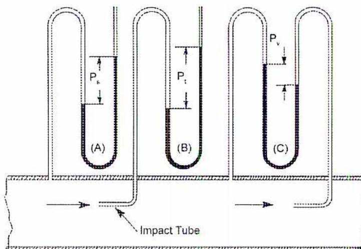
Figure 2
Total, Static and Velocity Pressures
FAN POWER AND EFFICIENCY
The power of a fan can be determined if the quantity of air handled and the pressure developed is known.
$$ \text{Fan Power in kW} = Q \times P $$
where
\( Q \) = Quantity of air handled, \( \text{m}^3/\text{s} \)
\( P \) = Developed pressure, kPa.
It is customary to specify pressure the fan develops as static pressure. Therefore, the power requirement calculated is called static air kW power .
$$ \text{Static Air Power in kW} = Q \times P_s $$
If the air rating is based on total pressure, then it is called power output .
$$ \text{Power output in kW} = Q \times P_t $$
The efficiency of a fan is the ratio of the output power to the input power delivered to the fan shaft. If the power output is static air power and input power is shaft power, then the calculated efficiency is called static efficiency , \( \eta_s \) .
$$ \eta_s = \frac{\text{static air power}}{\text{shaft power}} $$
If the efficiency is based on power output found by using the total pressure then the efficiency is known as mechanical efficiency , \( \eta_h \) .
$$ \eta_h = \frac{\text{power output}}{\text{shaft power}} $$
Example 7
A fan develops 1245 Pa static pressure and 174.4 Pa velocity pressure at a capacity of 2265 m 3 /min. The input or shaft kW is 57. Calculate the static and mechanical efficiencies.
Solution
$$ \begin{aligned} &= V \times P_s \\ \text{Static air power:} \quad &= \frac{2265 \times 1.245}{60} \\ &= 47 \text{ kW} \end{aligned} $$
$$ \begin{aligned} \text{Static efficiency:} \quad \eta_s &= \frac{\text{static air power}}{\text{shaft power}} \\ &= \frac{47}{57} \times 100 \\ &= \mathbf{82.5\%} \text{ (Ans.)} \end{aligned} $$
Total pressure:
$$ \text{Total pressure} = 1245 + 174.4 = 1419.4 \text{ Pa} $$
Power output:
$$ \begin{aligned} &= Q \times P \\ &= \frac{2265 \times 1.4194}{60} \\ &= 53.6 \text{ kW} \end{aligned} $$
Mechanical efficiency:
$$ \begin{aligned} \eta_t &= \frac{\text{power output}}{\text{shaft power}} \\ &= \frac{53.6}{57} \times 100 \\ &= \mathbf{94\%} \text{ (Ans.)} \end{aligned} $$
Chapter Questions
B2.5- Complete the following chemical reaction equation for methane by filling in the required number of molecules needed to balance the reaction. Determine the mass of oxygen, carbon dioxide and water required for complete combustion of 1 kg of methane. The molecular weight of carbon is 12, hydrogen is 2 and oxygen is 16.
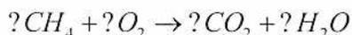
- Define proximate and ultimate analysis of fuels and provide a brief description of how they are carried out. Indicate which one is more accurate and explain why.
- The following is the ultimate analysis of a sample of coal. Using Dulong's formula, calculate the heating value.
| Carbon..... | 82.15% |
| Hydrogen ..... | 5.09% |
| Sulphur ..... | 0.82% |
| Oxygen ..... | 7.32% |
| Nitrogen ..... | 1.48% |
| Ash ..... | 3.14% |
- Describe how the heating value of a fuel may be found by using a bomb calorimeter.
- Calculate the theoretical air required to combust the coal described in question 3.
- What are the three major components of flue gas that are normally analyzed? Explain what each one indicates.
- A chimney is 50 m high and the temperature of the gases entering the chimney is 326°C. The plant is located at sea level and the ambient air temperature is 30°C. Calculate the theoretical draft produced in Pa.
- 8. A fan develops 1300 Pa static pressure and 150 Pa velocity pressure when delivering 2 300 m 3 /min of air. The static efficiency is 77%. Calculate the following:
-
- (a) Static air power
- (b) Power output
- (c) Shaft power
- (d) Mechanical efficiency